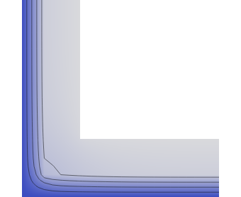

corner2d-harmonic-swing-winter

{"preset":"corner2d","field":"Harmonic swing Δθ(t)","frequency":"annual","time":"~day 15 (winter)","scale":"±10.00 K (fixed symmetric)"}
Harmonic-only view: Δθ(t) = Re[T̂_annual e^{iωt}], steady field removed. Winter (~day 15): exterior swings cool (39% blue, Δθ<0). Summer (~day 197): exterior swings warm (40% red, Δθ>0). ~60% neutral grey = the damped interior held at Δθ≈0 (DC removed). Fixed symmetric scale ±9.9995 K. corner2d steady readouts unchanged: f_Rsi 0.897 / ψ -0.0646.
- ✓ sign-flip-breathes — A cool 39.1%/warm 0.0% ↔ B cool 0.0%/warm 39.9% (lean ≥ 10%)
- ✓ dc-removed-flat-interior — neutral (Δθ≈0) 60.9% of solid pixels (> 30% — steady field removed)